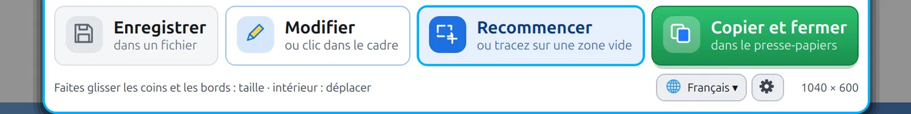
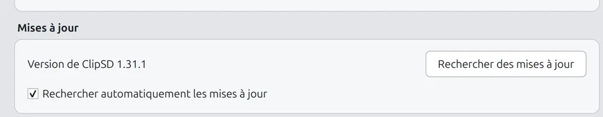
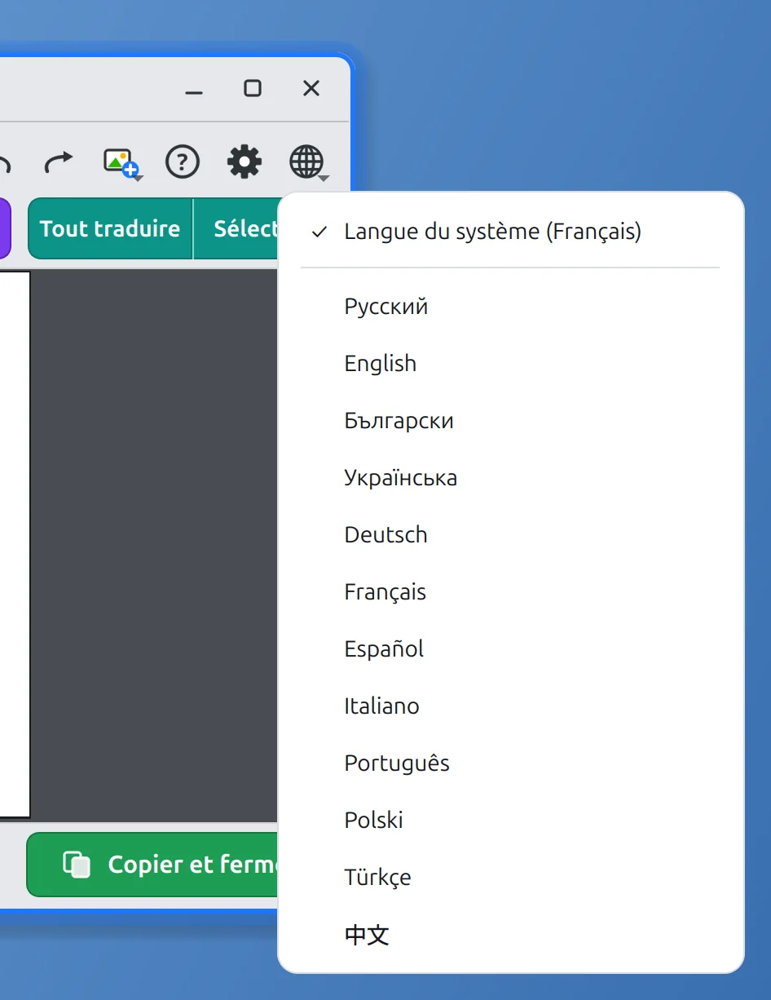
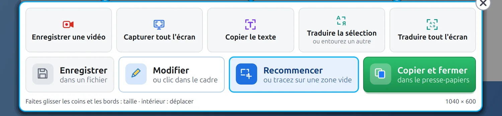
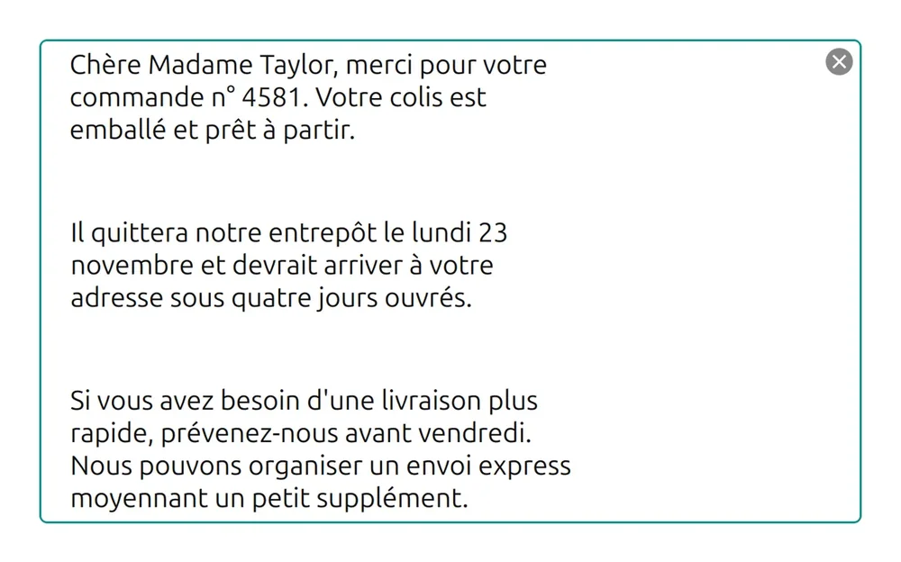
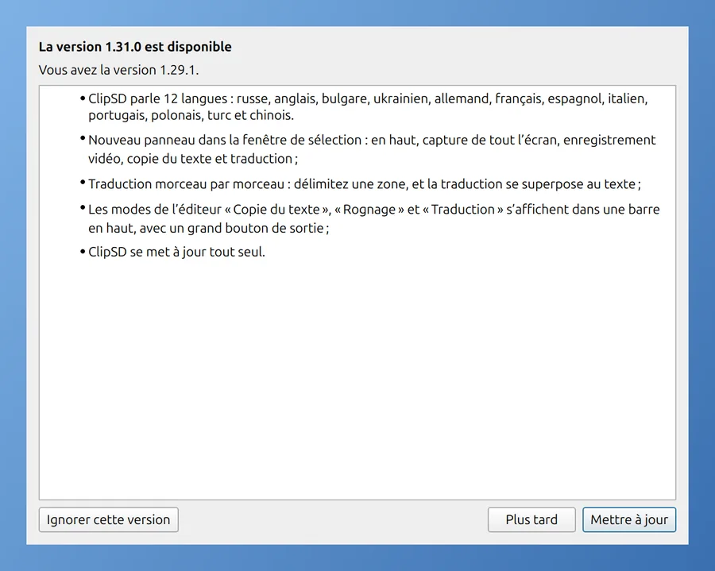

Historique des versions
Les nouvelles versions apparaissent d'abord sur la chaîne Telegram de ClipSD (s'ouvre dans un nouvel onglet).
Version 1.32.1
sortie le
- Rétablir dans l'éditeur. Ctrl+Y rétablit de nouveau une action annulée : sous Windows, le raccourci ne faisait rien. Ctrl+Shift+Z fonctionne aussi.
- Noter ClipSD. La fenêtre après l'envoi ne reste plus sur « Envoi de l'évaluation… » quand l'évaluation est déjà arrivée. Si vous appuyez sur Alt+W pendant l'évaluation, l'avis saisi n'est pas perdu : il revient la prochaine fois que vous ouvrez la fenêtre d'évaluation.
- Mise à jour urgente. Si la fenêtre « Mise à jour urgente de ClipSD » a été fermée par une capture (Alt+W), elle réapparaît une fois la capture terminée, et non le lendemain.
- Couleur de l'objet sélectionné. La couleur et l'épaisseur de l'objet sélectionné ne changent que pour cet objet. Sous la palette, une info-bulle apparaît : le bouton « Continuer avec cette couleur » garde la nouvelle couleur pour les traits suivants.
- Couleurs personnalisées. Les couleurs choisies avec « + » sont mémorisées sous forme d'échantillons avant le bouton « + ». Il y en a trois au maximum, un clic droit en supprime un.
- Surligneur et crayon. Si vous commencez un trait tout contre le bord du précédent, un nouveau trait est tracé et le précédent ne bouge pas.
Version 1.32.0
sortie le
- Nouvel éditeur. Les outils sont regroupés (flèches et lignes, formes, textes, dessin et autres). Le bouton « Tous les outils » les affiche tous à la fois, avec leurs touches. Pour une capture étroite, la fenêtre de l'éditeur est étroite elle aussi : les groupes se replient et tous les outils restent à portée de main.
- Menu du clic droit. Le menu d'un objet sélectionné ne cache plus son cadre ni ses poignées : il s'ouvre à côté de l'objet.
- Cloche de notifications. L'éditeur a une cloche « Notifications » : nouvelle version avec le bouton « Mettre à jour », nouveautés de la version installée et courts messages du programme. Une nouvelle version est d'abord annoncée par la cloche ; la fenêtre proposant la mise à jour apparaît plus tard, si vous n'avez pas mis à jour entre-temps.
- Visite de la fenêtre de sélection. Lors de la première capture, la fenêtre montre étape par étape ce que font les boutons du panneau. Pour la revoir, ouvrez le menu de l'icône près de l'horloge : « Visite de la fenêtre de sélection ».
- Les noms des langues ont maintenant des drapeaux. La langue choisie dans les réglages s'applique tout de suite, sans fermer la fenêtre.
- Les réglages sont répartis en sections. Une liste à gauche (Général, Capture, Éditeur, Texte et traduction, Mises à jour, À propos) avec une recherche au-dessus. La fenêtre retient la section qui était ouverte.
- Noter ClipSD. Vous pouvez noter ClipSD de 1 à 5 étoiles et laisser un avis : menu de l'icône ou « ? » dans l'éditeur, « Évaluer ClipSD ». De temps en temps, le programme le propose lui-même, mais seulement quand vous ne faites pas de capture et ne travaillez pas dans l'éditeur.
- Captures plus nettes sur écrans mis à l'échelle. Sur les écrans mis à l'échelle (125 %, 150 %, 200 %), les captures sont plus nettes : l'éditeur les affiche sans flou. Sous Linux, les navigateurs et documents les collent à leur taille d'origine, sans les étirer. Dans les réglages, section « Capture », vous pouvez choisir la « Taille de la capture » : pleine résolution ou comme à l'écran.
- Un aspect plus calme des fenêtres. Un aspect plus calme et un texte plus lisible : textes et boutons plus contrastés, bouton vert principal plus foncé, et un cadre fin par défaut pour la fenêtre de l'éditeur.
- La fenêtre « À propos ». La fenêtre « À propos » contient maintenant les conditions d'utilisation du nom et de l'icône de ClipSD et un lien vers les actualités sur Telegram.
Version 1.31.2
sortie le
- Linux : la mise à jour s'installe de nouveau toute seule sur les systèmes récents (par exemple Ubuntu 26.04). Auparavant, elle était téléchargée mais pas installée.
- Linux : la reconnaissance de texte, les liens et le démarrage automatique fonctionnent de nouveau sur les systèmes récents.
- Si une mise à jour ne s'installe pas, une fenêtre avec les boutons « Réessayer » et « Rapport d'erreur » apparaît. Le rapport ne contient ni nom d'utilisateur ni chemins de dossiers personnels.
- Après une mise à jour, la fenêtre des nouveautés commence par la ligne « Mise à jour installée ».
Version 1.31.1
sortie le
- Dans la fenêtre de sélection de zone, vous pouvez changer la langue et ouvrir les paramètres tout de suite : en bas de la barre, à gauche de la taille, un globe avec le nom de la langue et un engrenage.

- La traduction est séparée en deux boutons : « Traduire la sélection » traduit le cadre déjà en place, « Choisir et traduire » vous laisse entourer un autre endroit. La traduction de tout l'écran passe dans la ligne du mode traduction, bouton « Tout l'écran ».

- La barre de la fenêtre de sélection est environ 15 % plus compacte et se place à côté du cadre au lieu de le couvrir : dessous, dessus, à droite ou à gauche. Elle ne passe à l'intérieur du cadre que s'il n'y a pas de place à l'extérieur.

- Les paramètres ont une nouvelle section « Mises à jour » : version, bouton « Rechercher des mises à jour » et case de recherche automatique. Le bouton « ? » de l'éditeur ouvre maintenant un menu : « Visite guidée du programme », « Rechercher des mises à jour » et « À propos ».


- Dans l'éditeur, « Annuler » et « Rétablir » sont au début de la rangée, sur un fond à part. Par défaut, les outils sont rangés ainsi : déplacer, flèches côte à côte, puis formes, puis le reste. L'ordre que vous avez choisi vous-même ne change pas.

- L'icône du globe est bleu clair partout, plus facile à repérer.
- Linux : la première installation est corrigée, elle pouvait auparavant s'arrêter en silence à mi-chemin.


Version 1.31.0
sortie le
- ClipSD propose 12 langues d'interface : russe, anglais, bulgare, ukrainien, allemand, français, espagnol, italien, portugais, polonais, turc et chinois. La langue change immédiatement, sans redémarrage : menu de l’icône près de l’horloge, globe dans l’éditeur, première étape de la visite guidée ou paramètres.

- Nouveau panneau dans la fenêtre de sélection : en haut, capture de tout l’écran, enregistrement vidéo, copie du texte et traduction ; en bas, « Modifier », « Enregistrer » et « Copier et fermer ».

- Traduction morceau par morceau : délimitez une zone, et la traduction se superpose au texte ; délimitez la suivante, et elle est traduite à son tour. Échap quitte ce mode.

- Les modes de l’éditeur « Copie du texte », « Rognage » et « Traduction » s’affichent dans une barre en haut, avec un grand bouton de sortie ; Échap rétablit l’outil précédent.

- ClipSD se met à jour tout seul. Une fois par jour, il vérifie s’il existe une nouvelle version et propose « Mettre à jour », « Plus tard » ou « Ignorer cette version ». Pour vérifier immédiatement : menu de l’icône, « Rechercher des mises à jour ». La mise à jour est contrôlée au moyen d’une signature numérique ; si la nouvelle version ne démarre pas, la précédente est rétablie.
